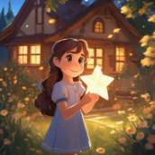

Once upon a time, there lived a little star that loved to shine every night. One evening, a strong wind carried the little star far away from the sky. It became lost in a quiet forest.
The trees whispered gently and the moon searched across the sky, but no one could find the tiny star. Birds, rabbits and butterflies wished to help their glowing friend return home.
A young girl named Lily noticed a soft golden light behind the flowers. She carefully picked up the little star and smiled.
"Do not worry," she said. "I will help you return to the sky." Together they climbed the tallest hill and waited for the moon to appear.
The moon thanked Lily for her kindness. The little star flew back to the sky and shined brighter than ever before.